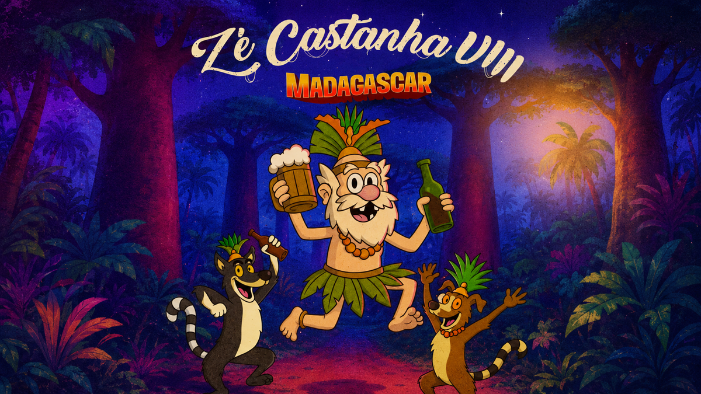

ZÉ CASTANHA V — LAS VEGAS
José Castanha passava mais uma tarde no bar quando decidiu gastar seus últimos trocados em uma raspadinha. Contra todas as probabilidades, o prêmio era uma viagem para Las Vegas...
José Castanha passava mais uma tarde no bar quando decidiu gastar seus últimos trocados em uma raspadinha. Contra todas as probabilidades, o prêmio era uma viagem para Las Vegas...


Depois de curtir Las Vegas como se não houvesse amanhã, José Castanha resolveu apostar alto demais e acabou jogando poker contra a Yakuza...


Após escapar da confusão em Tokyo, José Castanha e os Dogs seguiram viagem sem rumo até chegarem à misteriosa Transilvânia...


Depois de transformar um castelo assombrado da Transilvânia em festa, José Castanha resolveu descansar da única maneira que considerou confortável...